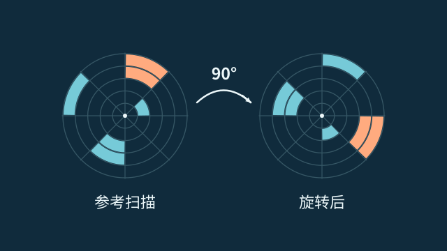

序言
想象闭着眼站在一排布局相同的储物间里，只用卷尺量到四面墙的距离。你可能知道自己离门很近，却说不出这是第几个储物间。激光重新定位有时遇到的正是这种信息不足，而不只是算法算得不够快。
先从大量旧扫描里找出候选
假设已经有一张地图，同时保存了若干扫描的点云和拍摄这些点云的位置。机器人丢失跟踪后，新的扫描仍在自己的传感器坐标系里，要找到它相对于整张地图的位姿。如果把新扫描与每个旧位置都从头做精细配准，计算量会很大，而且初始朝向也未知。
一种做法是先用紧凑的地点描述筛选候选。Scan Context 把雷达周围划成同心环和扇区，用各格中的高度信息描述周围结构。可把它想象成极坐标的地形摘要。绕竖轴转动会让扇区发生循环移位，因此还可以比较哪个偏移更匹配。摘要相近仅说明值得细查，小物体和精细形状已经在压缩中丢失。
描述子到底保存了哪些空间信息
简单起见，只取两个距离环和四个方向扇区。把近环的东、南、西、北四格写成一行，把远环写成另一行，每格记录命中点中的最高高度。若某根立柱主要落在远环东侧，它会给相应格子贡献较大值。转动传感器通常使显著结构沿扇区移动；改变传感器位置则还可能改变所属的距离环。
这种压缩使检索速度更可控，却不能保留原始点的所有表面形状。两间房若都有相近高度的柜子，摘要可能十分接近；玻璃导致缺测时，对应格子也不能直接视为零高度的真实表面。把位置描述用于缩小候选集合，再保留原始点云给下一步几何验证，正好利用了两种表示各自的特性。


手画一座有对称性的走廊
用八个扇区表示一圈，每格跨 45 度。假设观测到的高柜和立柱在摘要里形成两个显著峰，当前扫描与旧扫描最佳对齐相差两个扇区，这相当于约 90 度的朝向差候选。偏移的正负还要由扇区排列方向决定，画一支朝前的箭头就能核对。
现在让相邻两层楼都具有这副平面布局。两个地点都能在同一偏移下得到相似摘要，即使分数很高也不应当作唯一定位。把候选姿态各自应用到原始点云，再与对应地图区域精配准。观察角落的凸柱、楼梯边缘等摘要中不够显眼的结构，核查有效配对的范围及残差，而不单看最佳分数。
多走一步会增加哪类证据
若当前正面对一排平墙，横向移动可能依旧无法区别地点。转向楼梯口，观察同一系统能否预测扶手、转角和几级台阶出现的方向。正确候选应同时解释前后几帧以及帧间相对移动。如果两个候选都能解释当前序列，那么结果仍有歧义；强行平均两个楼层的位姿会得到夹在楼板中的虚构位置。
可以选若干从未用于建图的扫描做检查。先统计正确位置是否进入候选集合，再统计几何验证是否从集合中选中了它。前一项差提示地点描述或检索覆盖有问题，后一项差则需要检查初始朝向、局部配准与几何区分度。这样一次定位失败也能查出是在哪个环节丢了正确答案。
把一次“找错房间”分解成两个分数
用十次有独立位置标注的回访做练习。假设检索给出的三个候选中，有八次包含正确地点，只有六次最后被几何验证正确选出。则前三候选的召回率为 8/10，整个流程的成功率为 6/10。在有正确候选的八次里，后续阶段成功了 6/8。三者的分母不同，不能用一个百分比替代。
对另外两次没有正确候选的样本，调整 ICP 的迭代次数帮不上忙，因为它根本没看到正确地图区域。对已经有正确候选却选错的样本，可以比较初始偏航、点云重叠和沿走廊方向的约束。若在两间真正相同且观测范围很小的房间里分不清，承认当前多解并等新观测，是符合几何信息量的判断。